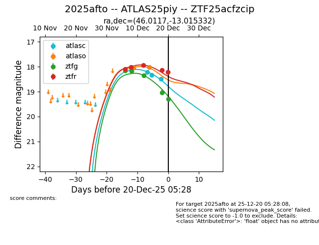
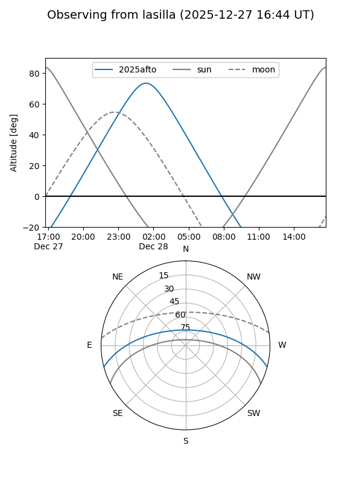
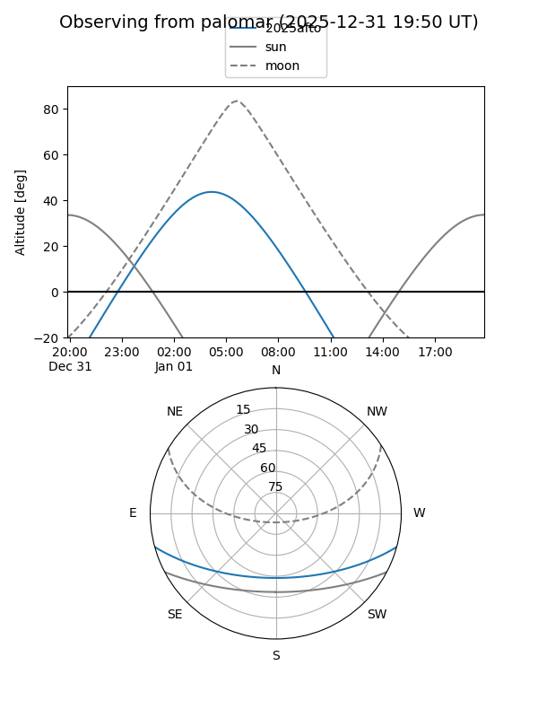
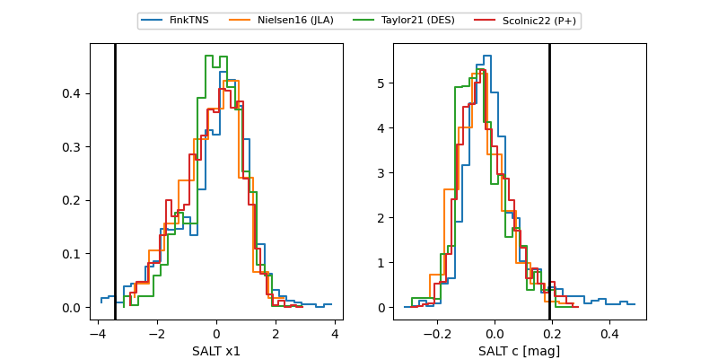

2025afto
Target 2025afto at 2025-12-31 18:00
Aliases and brokers:
FINK: link
Lasair: link
ALeRCE: link
TNS: link
YSE: link
alt names
ZTF25acfzcip (ztf,fink_ztf)
2025afto (tns,yse)
ATLAS25piy (atlas)
Coordinates:
equatorial (ra, dec) = 46.0117,-13.01533
equatorial (HMS+DMS) = 03:04:02.81,-13:00:55.20
galactic (l, b) = (195.0883,-55.96207)
Flags:
Photometry:
last atlasc=18.50, atlaso=18.02, ztfg=19.45, ztfr=18.70
3 atlasc, 3 atlaso, 6 ztfg, 7 ztfr detections
Lightcurve

Visibility


Additional plots
